30 ottobre 2026 · revisione locale del branch final-polish-v4. Rapporto completo. Le immagini sono schermate reali; il mockup non viene usato come interfaccia piatta. Tocca una schermata per ingrandirla.
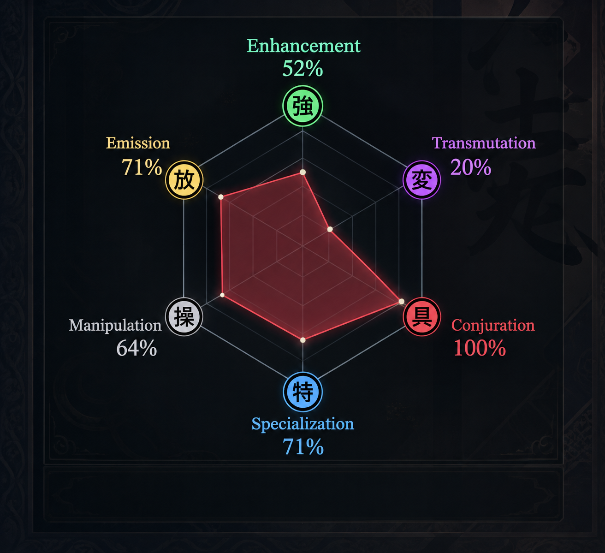
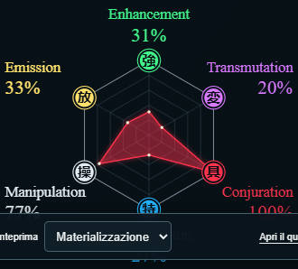
La griglia, i sei medaglioni, i nomi e le percentuali sono elementi SVG. Nessun tooltip o asterisco sotto il radar.
Il riferimento vale per i pannelli inferiori. Le mani e il bicchiere del mockup non sostituiscono quelli della build approvata.
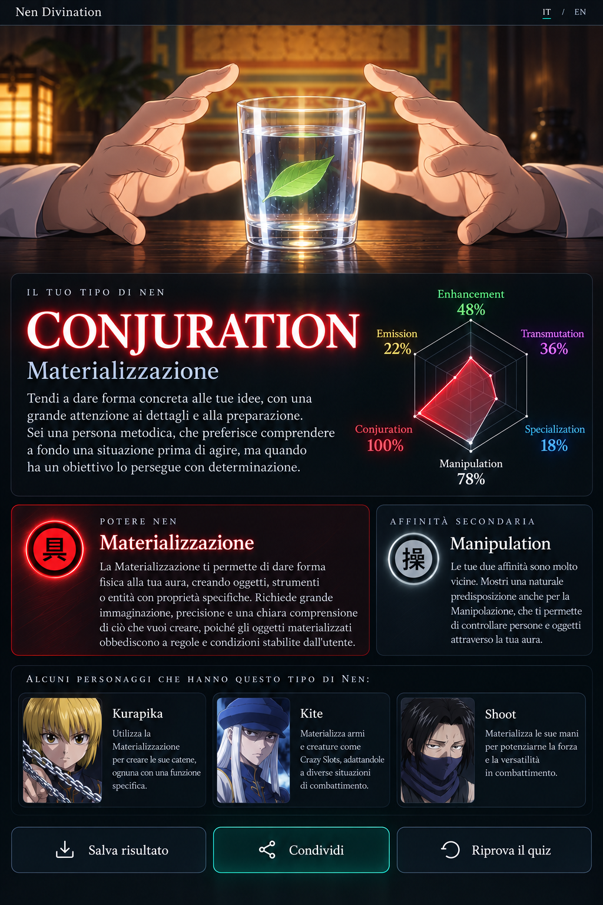
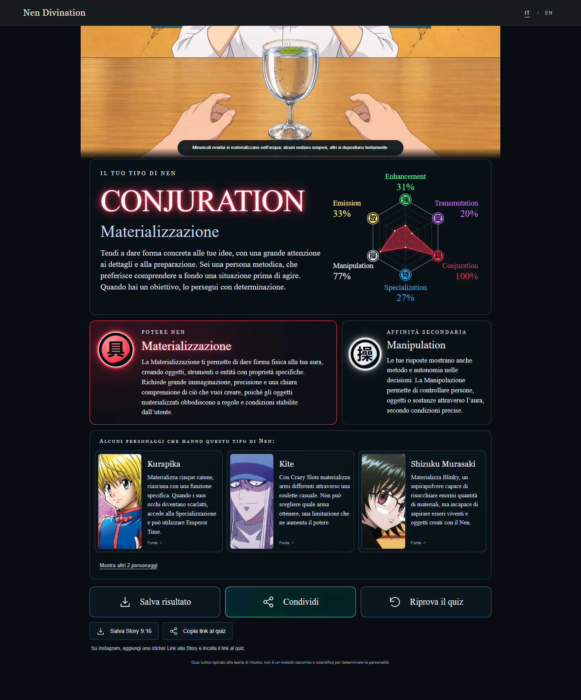
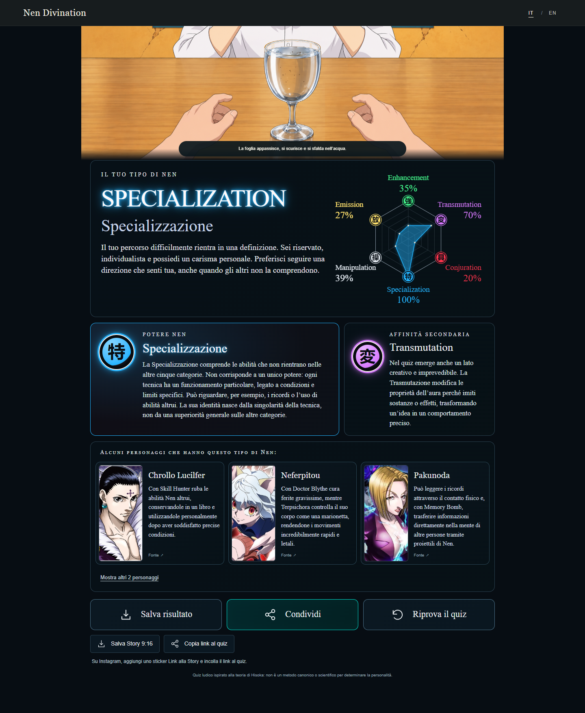
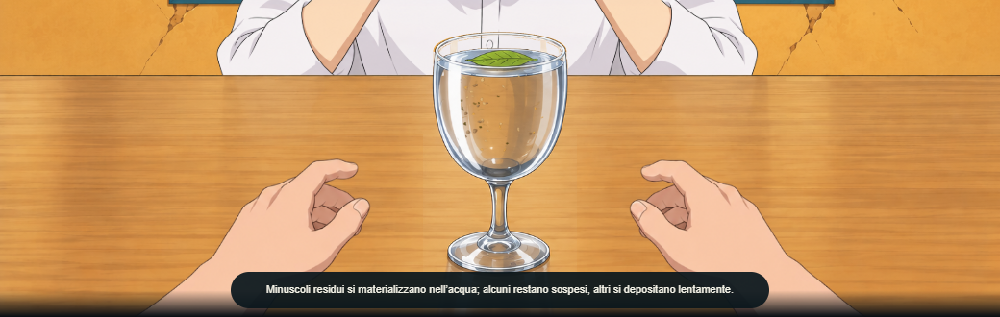
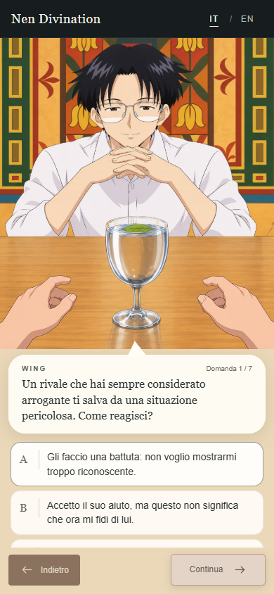
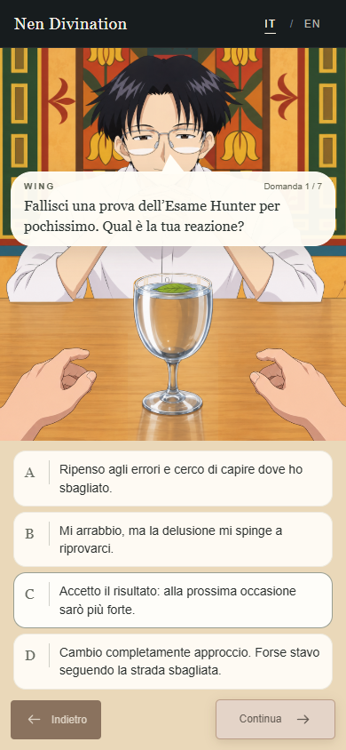
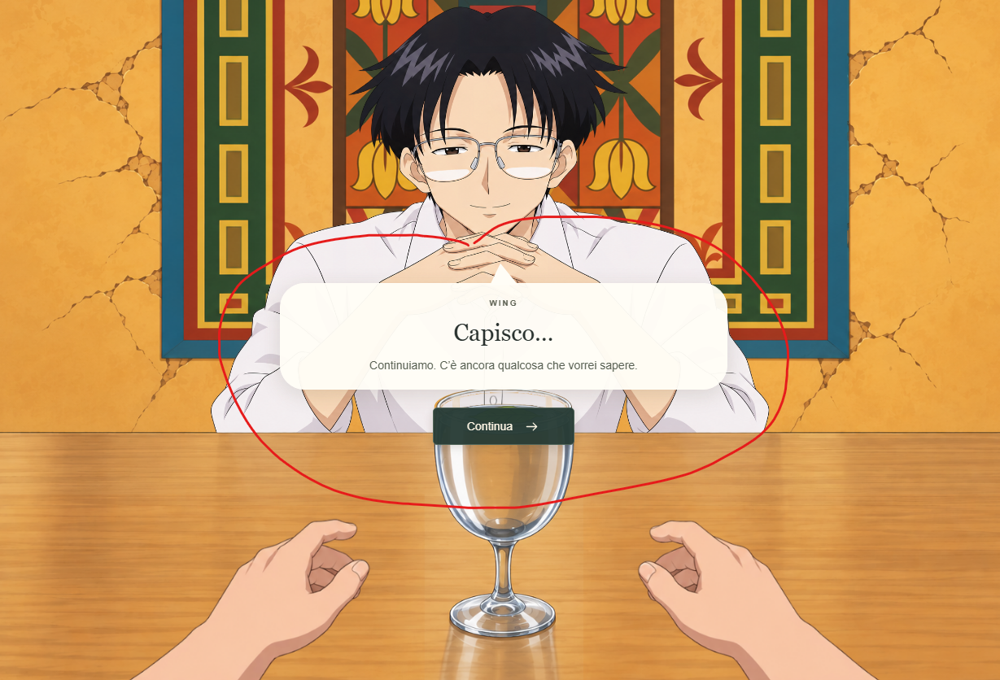
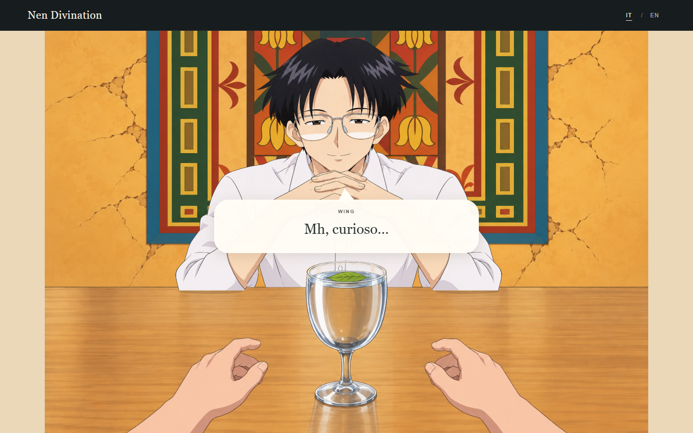
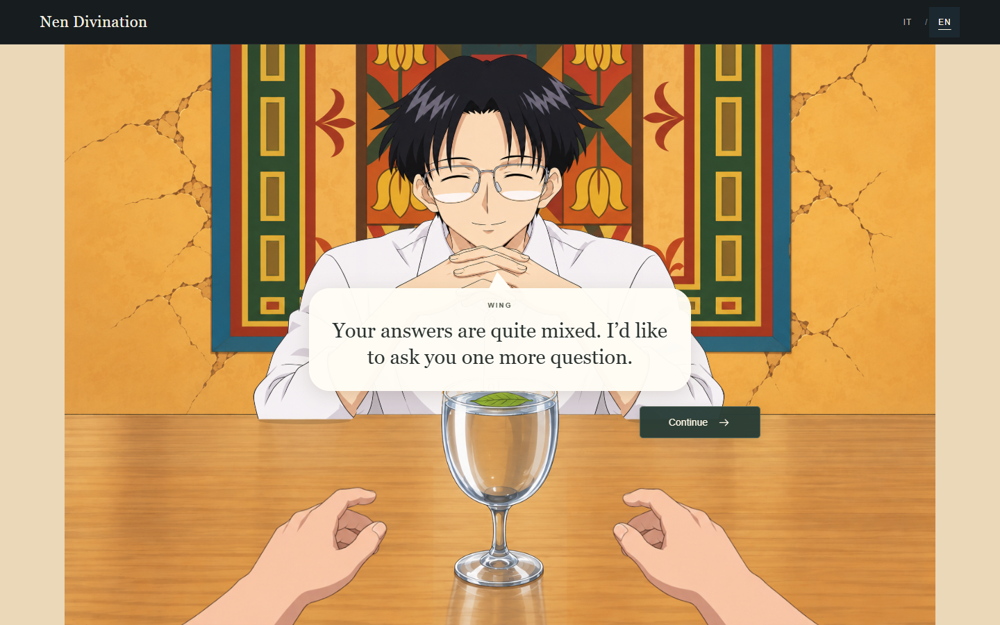
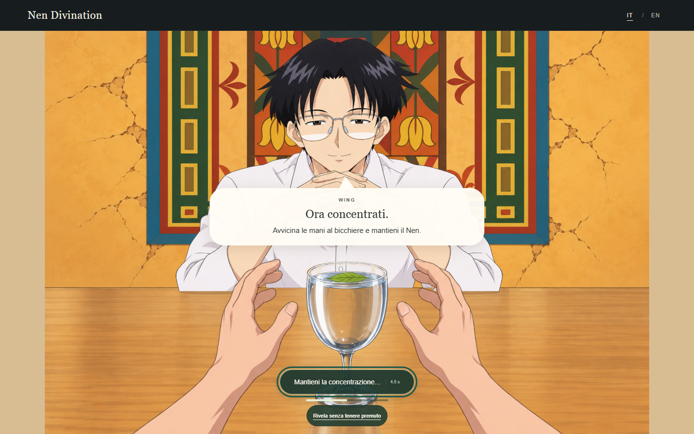
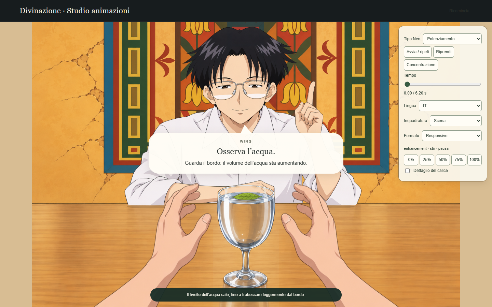
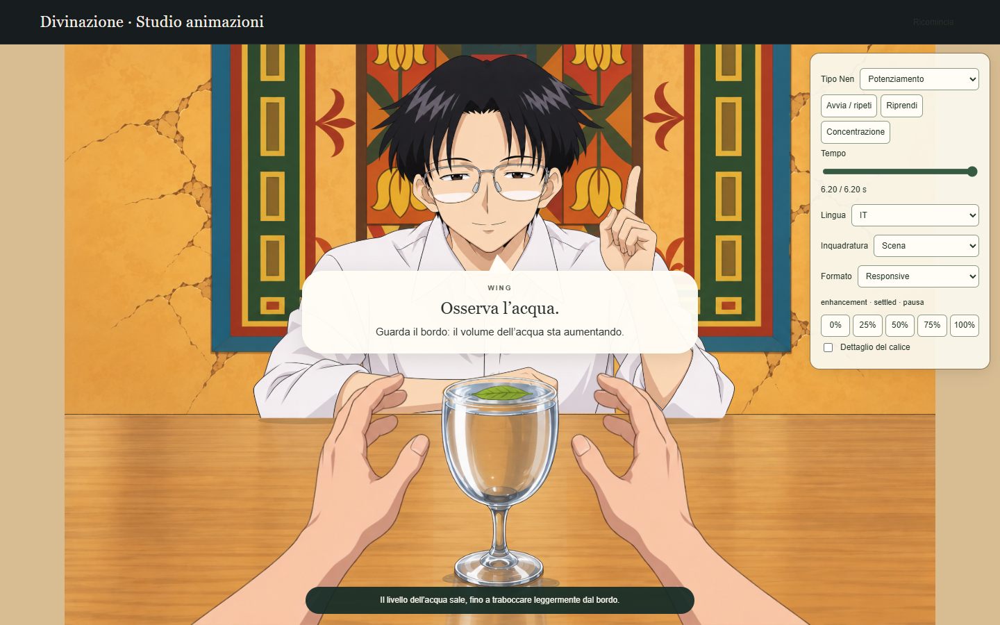
Frame 0/50/100% di tutti e sei i tipi, desktop/mobile, e video reali: .verification/v4/final/. Le colature si valutano meglio nel video o con play/seek in review/divination.html.
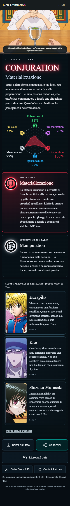
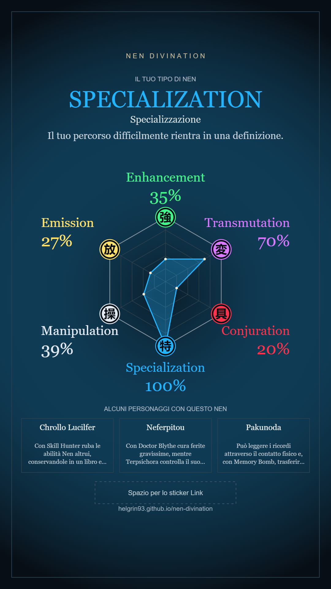
I ritratti senza permesso verificato sono omessi dall’export. Lo sticker Link si aggiunge nell’editor Instagram.
Acquisizione reale completa: desktop 65,52 s; mobile 56,88 s. I file rimangono fuori da Git e dal bundle.